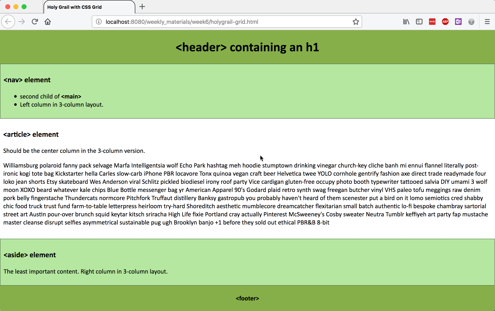
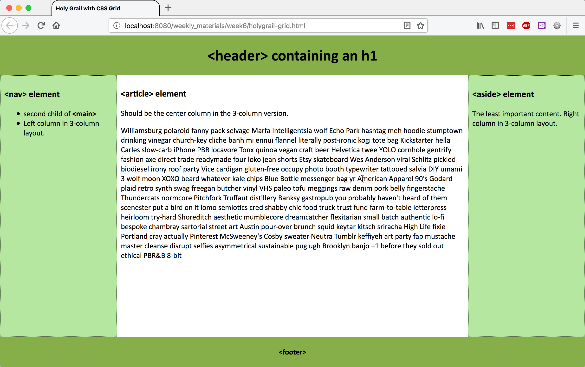
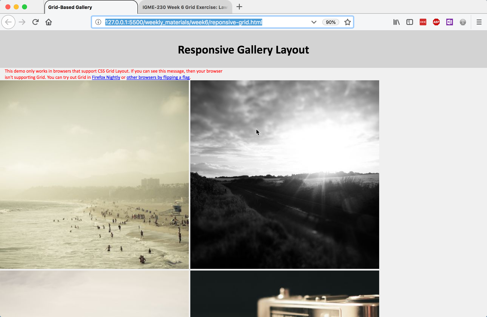
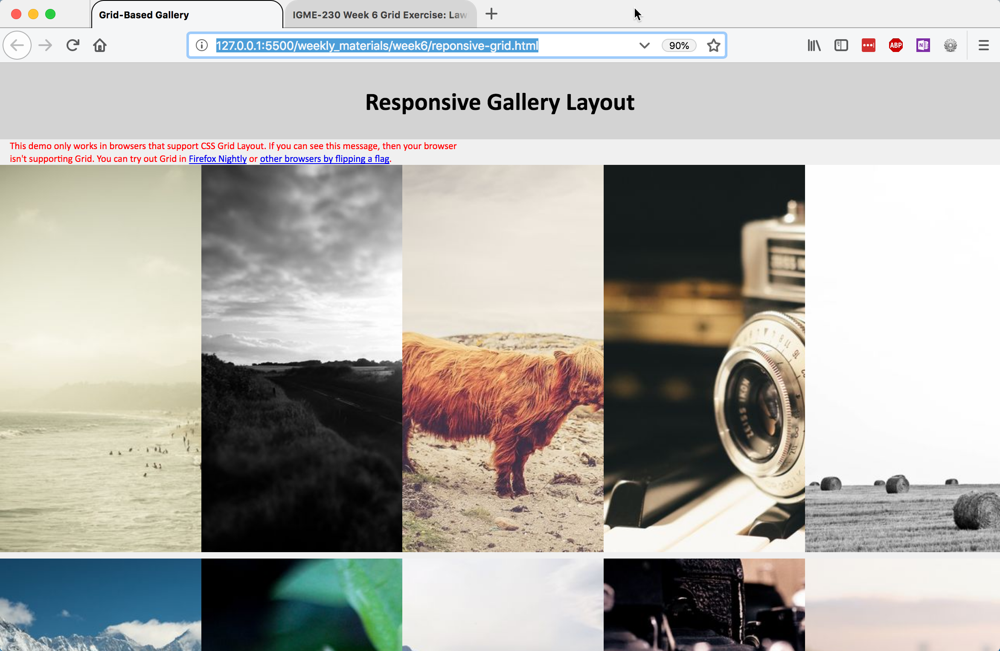
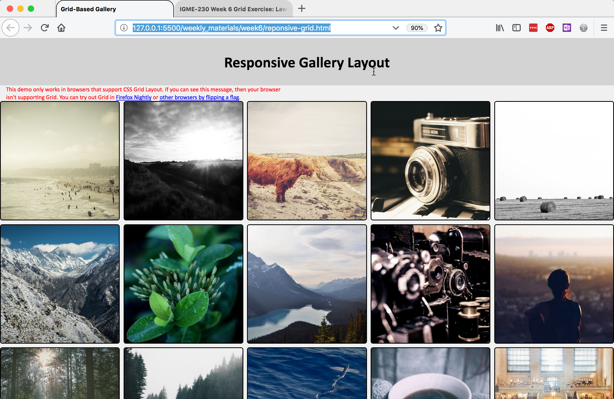
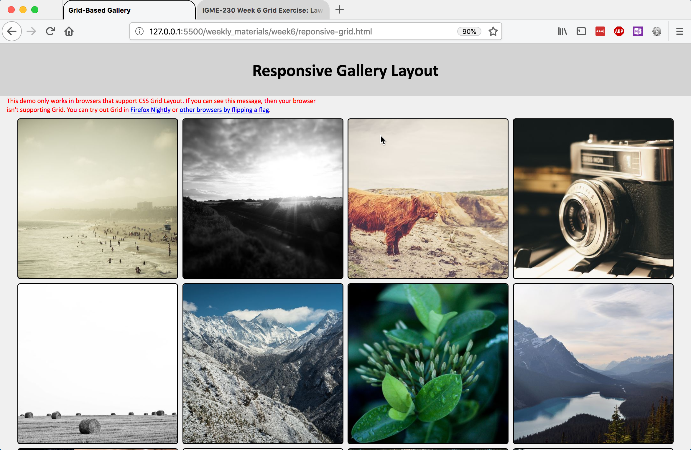

CSS Grid Exercise
(Week 6, Thursday 10/4)
This exercise has two parts. First, you'll create another "holy grail" layout, using CSS Grid instead of Flexbox. Then you'll create a responsive CSS image gallery
Due: By start of class on Thursday, 10/4.
Grid Garden
Before you start on the exercise, you may want to spend some time with the Grid Garden game, which will give you some practice with grid syntax. Once you're comfortable with grid, move on to the exercise.
Setting Up the HTML
Create a folder for this exercise in your igme230 repository. Download the following HTML files into that folder (right click on the link and choose "save file as"):
As with Tuesday's Flexbox exercise, the HTML files have the structure and content of the documents you'll be creating, and you won't be editing them at all--but you should open them and make sure you understand how they're structured. You should also open each one in a browser preview so that you see what the default layout looks like before you begin editing the CSS.
The CSS files are where you'll be doing your work for this exercise. I've started you off with some basic formatting, so that you can easily see how the documents are structured. You'll be adding your CSS rules to what's already there.
Holy Grail with CSS Grid
Unlike Flexbox, Grid allows us to define both rows and columns, so while we're still going to use a #wrapper div for the grid structure, we no longer need a <main> container for the three columns of content.
In your holygrail-grid.css file, assign display: grid; to the #wrapper div.
As you know from your readings, there are a variety of ways to assign elements to locations in a grid. Because we're going to define two different grids (one for mobile and one for desktop), we're going to name the various elements in the grid rather than using numeric values.
In holygrail-grid.css, assign the elements to named grid areas with the following code:
header {
grid-area: header;
}
nav {
grid-area: sidenav;
}
article {
grid-area: article;
}
aside {
grid-area: sidebar;
}
footer {
grid-area: footer
}
We're going to use a mobile-first design approach with this page. On a small screen, we'll set the height to 100vh, designate five grid template areas for the five content elements (which allows us to easily specify display order), and set five row heights as proportional components of the wrapper.
#wrapper {
display: grid;
height: 100vh;
grid-template-areas: "header" "sidenav" "article" "sidebar" "footer";
grid-template-rows: 1fr 2fr 10fr 2fr 1fr;
}
Preview the holygrail-grid.html page; it should look like this:
Now we need to create the three-column version.
Add a media query for min-width 760px, and in it, redefine the grid from 1x5 to 3x3, by specifying three content elements for each of threw rows. Then define the height for each of the three rows, and the width for each of the three columns:
#wrapper {
grid-template-areas: "header header header" /* 1st row: header spans three columns */
"sidenav article sidebar" /* 2nd row: one element in each of 3 columns */
"footer footer footer"; /* 3rd row: footer spans three columns */
grid-template-rows: 1fr 10fr 1fr; /* defines relative height of three rows */
grid-template-columns: 20% auto 20%; /* defines width of the three columns */
}
Preview the holygrail-grid.html page; it should now look like this:
If you'd like to constrain the overall width of the container, so that the article's line length isn't too long, you could set a max-width on the #wrapper, and use margin: 0 auto; to center it on the page.
Responsive Image Gallery
CSS grid's ability to create implicit structure makes it possible to create responsive layouts without having to use media queries and predefined breakpoints. In this portion of the exercise, you'll be creating a simple responsive image gallery.
Preview the responsive-grid.html page before you begin. It's a simple list of 500px-square images, with all of the images inside of a <main> element:
Our goal is a page that creates as many grid columns as possible, with a minimum size of 250px and a maximum size of 1 equal fraction of the container, and resizes the images to take up the full size of the column they're in.
Start by defining <main> as a grid container.
- Set
display: grid; - Define grid-template-columns with a repeating pattern of
minmax(250px, 1fr); - Set a grid-gap of .5rem;
Preview the page; it should look like this:
It's setting up the columns properly, but the 500px square images are being cropped by the 250px wide columns. To fix that, we're going to modify the CSS rules for the img element. For img, add the following rules:
- Set
display: block;so we can control the box properly - Set width to 100%, so that the image scales proportionally in its container (the grid cell)
- For aesthetic purposes, give it a 2px solid black border, and a border-radius of 5px
Preview the page again; it should look like this:
That's an improvement! (Try resizing the window, too, to see what happens.)
You now have the grid functionality in place, but there's still some work that we can do to improve the way <main> displays.
- Set the max-width of main to 95vw to provide some space on either side
- Give it a .5rem margin on the top and bottom to provide some space above and below, and an auto margin for left and right so that it centers (
margin: .5rem auto;)
Preview the page. It should look like this now:
There's only one thing left to do: we want to hide the warning on browsers that support grid. To do that, we're going to use a feature query--it works very much like a media query, but instead of checking for screen size, it checks to see if a browser supports a specific CSS feature:
@supports (display: grid) {
.warning {
display: none;
}
}
That should hide the warning if the browser supports the display:grid property.
Preview the page; it should look like the example above, but without the warning paragraph.
Submitting Your Work
When you're done, add links to your landing page for each of the completed pages, and push the files to GitHub. The holy grail exercise must be submitted by the end of class (we will use this to take attendance), and the responsive grid gallery must be online by the beginning of class on Thursday, 10/4.